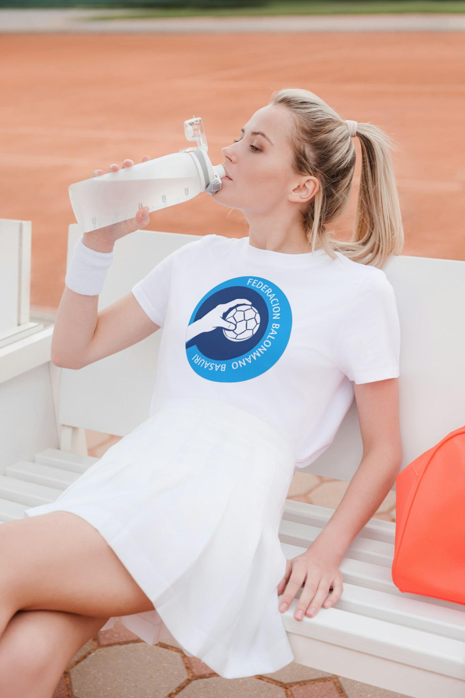

Somos the
Noticias
Fallece con sólo 20 años Blanca Guillén, jugadora del CAB y el Maristas Cartagena
Actualizado 07/10/2024 - 14:37CEST

Luto en el balonmano español por el fallecimiento de la jugadora cartagenera Blanca Guillén Sánchez, con sólo 20 años tras una grave enfermedad. La Federación de Balonmano de la Región de Murcia (FBMRMU) fue la encargada de dar la triste noticia mediante un comunicado.
El milagro de un triple campeón de Europa: el Vipers evita la quiebra
Actualizado 05/11/2024 - 16:34CET
yen menos de un día, resucitó. Todo un milagro deportivo, ya que el Vipers Kristiansand, triple campeón de Europa de manera consecutiva en 2021, 2022 y 2023, anunció su bancarrota de manera oficial esta pasada noche en su página web. Pues bien, el club noruego acaba de comunicar su salvación de forma impensable. La inyección de una suma de dinero desconocida por parte de inversores locales, clave en la 'resurreción'.
El Consistorio de Basauri encarga dos esculturas sobre el mundo del deporte
Martes, 7 de agosto 2007, 12:40

El Ayuntamiento de Basauri acaba de adjudicar el contrato de suministro de dos esculturas por un total de 116.000 euros. Se trata de las obras 'Lanzador de sueños' y 'Lazos del deporte', que tienen como motivo principal el mundo del deporte. La primera, con un coste de 70.000 euros, es obra del artista local Jon Alberdi y fue donada al municipio por el Atlético Club Balonmano. El trabajo simboliza la fusión de los dos clubs que conviven en la localidad y refleja, como detalló el autor en su momento, el momento en el que jugador se dispone a lanzar el balón. Por el momento, los responsables municipales no han desvelado el lugar en el que será ubicada la escultura. Lo que sí se conoce es el lugar que ocupará el segundo trabajo: 'Lazos del deporte'. Aunque los dirigentes locales declinaron dar detalles, confirmaron que la escultura, encargada a la empresa Alfa Arte por 95.000 euros, quedará instalada en otoño en el polideportivo municipal.